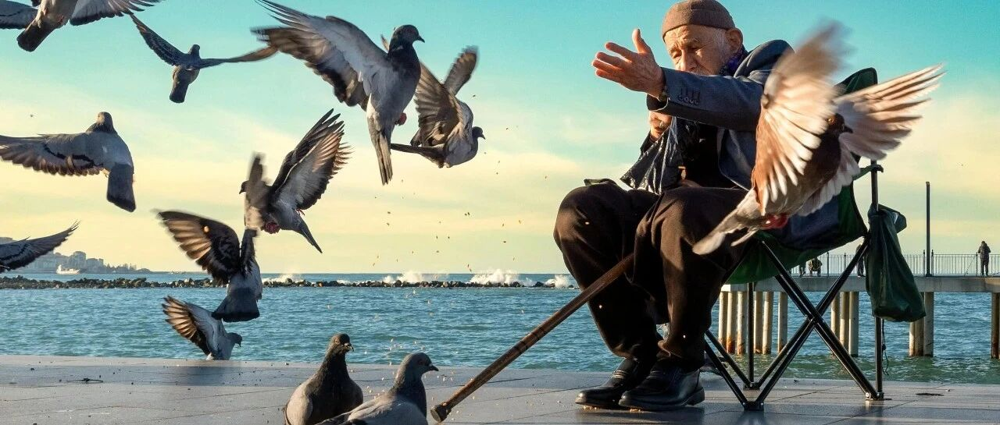

一笑已经风云过~
美股继续上涨。
多家医疗保健股暴跌，西维斯健康、Elevance Health跌超10%，联合健康、哈门那跌近20%…
原因是老美CMS公布2027年联邦医保优势计划支付费率的相关方案，根据这个方案，老美拟收紧医保钱，净支付增长将只有0.09%，明显落后于通胀趋势；
另一个原因是联合健康表示公司的营收将在30年内来首次下降。
联合健康盘中一度跌至280美元。这只个股上，我操作得不太好，但还算自己能力范围内游刃有余：
2024年12月记录过440-470之间第一次抄底，写过生物医药板块短期内难有起色，需要中长期持有，普通人多看科技巨头（好像是《梦回2008》那篇，具体大家自己翻，我也忘了）；
随后在2025年4月反弹至545美元时卖掉一部分（印象中是在《大暴跌？就这？？》一文中），在随后不久的更新中提示短期内即将见顶，有下跌的风险；
25年4底-8月大跌时，击穿第一个支撑位460时没动，第二个支撑位440也没动，第三个支撑位420时开始抄底，400和387这两个节点逐步加仓。但市场超跌+做空，让联合健康直接一路下跌至234左右，我在325和285、250加仓买入，227的最后防守节点没有触发；
联合健康反弹至318时T掉了一部分，因为买的量选超预期，并在之后联合健康大涨至385时，盘前在375和385美元T掉一部分。这些历史文章都有记录。
期间，多次强调普通人买美股7巨头+纳指和标普这两个宽基指数ETF即可；强调生物医药/医药保健板块等需要中长期，短期内没戏。
这是我所能做的：提醒风险，并根据自己能力（包括风险承受能力）去做事。
也多次强调仓位和现金流的管控，比如联合健康在300以下入，涨上去了再T掉一部分腾出资金和仓位，方面应对后续的下跌。
正视自己的问题，才能成长得更快，老把问题归咎于别人，很难能有什么成就。
这次暴跌，有仓位的应对起来就轻松些：275-287之间的支撑位买，350以上T掉一部分，留一部分底仓中长期持有。
比如我打算买100股，就在275-287美元之间买入一部分，250和235加仓一部分。如果全部触发，那可以60-70股成本控制在300以下长期拿着，30-40股在350美元左右卖出去做T。
很难吗？不难吧？难的是控制自己的贪欲和恐惧：大涨舍不得T掉一部分腾出资金和仓位，大跌又恐慌割肉给市场做韭菜。
结合自己的情况（资金、仓位、成本和风险承受能力）去操作，而不是盲目跟风，照搬照抄。
可惜，大多数人都不懂得结合自己的情况，只会盲目跟风，然后成了就归咎于自己牛掰，不成就归咎于他人误导。
压根没有搞明白，仓位管理的重要性，甚至不懂仓位管理。仓位管理的核心是现金流。
如果有源源不断的资金可以调用进来，那仓位管理会很轻松，问题是大多数人都没有。那就要控制自己的欲望，上涨时T掉一部分，腾出资金和仓位，方便应对后续潜在的下跌。
牺牲少量潜在收益，去换取自己始终处于有选择、不陷入被动的境地，不是挺好的嘛？奈何很多人想不通这点，总是想着一口气吃饱。
更不要去追高，有些人看联合健康涨了，就FOMO情绪去追高330以上的联合健康，忘了300以下才入手的目标…
一切都是修行，外物终究只能做个参考，最终还是要靠自己。
其他的都没有操作。
不过伯克希尔开始逼近我的加仓目标，新增了473的加仓档，之前450、437、413，我还一直在等。
CRCL回到70美元以下，逼近60的加仓目标，这个是刮彩票性质的，不是什么好股。
微软反弹回480美元，没有继续往下，不过我也买得差不多了；可口可乐和强生双双创历史新高。
现在整体没有什么值得买的好个股，我也很少看，大多数个股不符合我“第一兼唯一”的选股标准。
其实说到底，我的核心就是仓位管理，即现金流管理。仓位管理得好，不贪心，拿少量潜在收益换取“让自己始终处于有选择的处境”。挺简单的。
如此，面临再大的暴跌也不慌，云淡风轻，一笑已经风云过。
… …
跟孩子们聊天。
老大说，他最近想通了一件事：我对他最大的引领，是通过不断地实践，激发了他内在的担当感。
这小子挺早熟的，也很会总结。男孩子有的为人做事很幼稚，有的很成熟，其根本就在于担当。
可以说，从男孩跨入男人的关键，就是担当。没有担当的人，总会给人不靠谱的感觉，很难成熟成长起来成为支柱。
独生子女往往这方面会比较慢，有事都是家里父母和长辈帮忙顶上，很少有让子女练手的机会不说，还缺乏历练的环境。
时间一久，就容易成为妈宝男/女。这个问题的核心，其实在父母身上，他们没有意识到这个问题，更别说让孩子去经历/实践，学会担当。
我经常会给孩子创造条件，让他们去实践和经历：
弟弟/妹妹出生前，会做好哥哥姐姐们的预期管理，比如别人都有弟弟/妹妹，充分描绘有弟弟/妹妹的好处，引导他们渴望像别人一样有弟弟/妹妹，并知晓弟弟/妹妹是来帮助他们未来一起走得更好、更远的，而不是来跟他抢东西。在他们的潜意识中，埋下“愿意为得到弟弟/妹妹而主动付出”的种子；
小时候让他们帮忙擦桌子、折菜/洗菜、购物时提东西…表现出来的是“需要他们帮忙”，激发他们内在的参与欲和被需要的感觉，小孩子很喜欢这种感觉；
长大些，会叮嘱他们，跟妈妈出门，作为家里的顶梁柱/男子汉，要保护好妈妈，需要的时候多帮助妈妈…激发他们内在的男子气概；
到七八岁，我出远门，都会让他们负责“当家”，在阿姨的“帮助”下，看家里每天要采购什么，工作怎么安排，让他们有机会历练和体验“当家做主”的感觉。
老大成长成熟得飞快，老三最近一年历练一番也成长很快，他甚至主动吩咐阿姨做好房间的卫生和布置，等弟弟妹妹回来要住。
担当，看着简单，培养起来挺难的，我们的引导都属于外部的推动，在他潜意识里埋下种子，能不能最终开花结果，还是要善于利用孩子喜欢“被需要”“被看见”的感觉去引导。
经历越早，担当感激发越容易。有的人20岁出头早早就懂担当、有担当；而有的人到了35岁以后，才开始懂担当。跟经历/环境有关。
遇到事都在找外因，就是不肯正视自己的问题，这种毫无疑问不懂什么叫“担当”。
所谓的安全感，最本质上，还是由对方的“担当”带来的。
就这样吧。
免责声明：本人提供的信息仅供参考，不构成投资建议。本人的交易不代表任何立场；投资者应根据自身财务状况、投资目标等情况自主做出投资决策并承担投资风险。投资有风险，入市需谨慎。